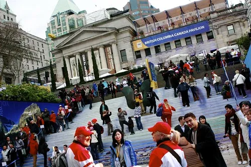

Vancouver 2010 Winter Olympics Stock Photos
I've started putting some of my Olympic photos on VancouverStockPhotos.ca for use by organizations seeking stock photos from around Vancouver during the Olympics. John Biehler is also going to be putting a pile of his photos up soon there, so if you know of anyone looking for commercial licenses for photographs, by all means send them to the 2010 Olympic Stock Photos gallery.

If you're a non-commercial organization, then you are free to use the photos as long as you follow the attribution clauses as indicated on their associated Flickr photos (non-commercial, attribution). The set of CC licensed photos are available on my 2010 Winter Olympic Photo Set.